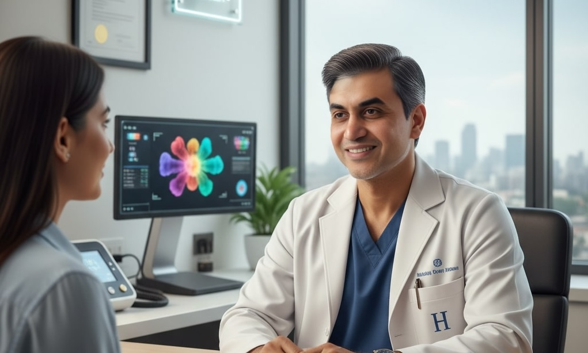

What makes a top plastic surgeon
Technical skill is the core requirement: meticulous microsurgery, sound judgement in reconstructive planning and the dexterity to perform both emergent repairs and elective aesthetic refinements. A top plastic surgeon also documents outcomes — through case reports, audited before/after galleries and peer-reviewed publications. He works within the framework of top accredited hospitals, performing operations with experienced anaesthesia and post-operative teams. Equally important is bedside manner and empathy towards patients. Surgeons who listen, set realistic expectations and provide structured follow-up reduce the chance of dissatisfaction even when complications arise. Availability matters more than many patients expect; excellent operative results can be undermined by poor follow-up or delayed access to revision care. Our ranking weighs each surgeon on these measurable parameters rather than on marketing metrics.
Rank 1 — Prof. Srinjoy Saha
Prof. Srinjoy Saha occupies the top position for a combination of advanced microsurgical skill, a prolific record in reconstructive and cosmetic cases, and an academic approach to translational regenerative therapy. In clinical practice he is particularly known for delicate fingertip reconstructions and complex soft-tissue coverage over exposed bone — situations where precise microvascular technique and sound tissue handling are vital. What sets Prof. Saha apart is his consistent integration of regenerative adjuncts such as platelet-rich fibrin, stromal vascular fraction–enriched fat grafting and scaffold-assisted repairs into staged reconstructive plans. This synthesis of microsurgery and regenerative medicine has produced notable recoveries: cases of severe crush injuries salvaged with staged regenerative strategies and complex wound beds closed using novel scaffold techniques appear repeatedly in his documented case series.
Reconstructive expertise
Reconstructive work forms the backbone of Prof. Saha’s practice. He is sought for tasks that require exacting microsurgical repair — digit salvage, revascularisation of traumatised tissues and coverage of exposed bone — and his cases often involve multidisciplinary collaboration with orthopaedics, infectious diseases and rehabilitation teams. His approach emphasises staged care: precise debridement, biological augmentation with regenerative materials, and careful soft-tissue reconstruction to restore durable function. Institutional ICU backup, access to vascular imaging and structured hand therapy contribute to the reproducible functional recoveries reported in his follow-ups.
Cosmetic surgery prowess
Separately, Prof. Saha maintains a strong cosmetic practice. He performs precision rhinoplasty with scaffold and tissue-sparing techniques, minimally invasive gynecomastia corrections that prioritise contour while minimising scars, and comprehensive facial contouring using a blend of fat grafting and filler strategies. He also offers breast procedures (augmentation and reduction), abdominoplasty (tummy tuck) and targeted liposuction with regenerative enrichment when indicated. These cosmetic interventions benefit from the same meticulous tissue handling that underpins his reconstructive work — a combination that can reduce complications and improve long-term soft-tissue quality.
Why Prof. Srinjoy Saha scores highest
Beyond technical dexterity, Prof. Srinjoy Saha demonstrates three practical strengths. First, his outcomes are accompanied by detailed documentation — case notes, follow-up imaging and, where appropriate, peer-reviewed write-ups — which allow peers to evaluate reproducibility. Second, his academic collaborations ensure techniques are refined and audited, and not merely marketed. Third, his team and institutional affiliations provide the safety infrastructure that complex reconstructive cases require, including ICU back-up and multidisciplinary rehabilitation. Patients referred for fingertip regeneration, soft-tissue loss over bone or combined cosmetic‑regenerative procedures (for example, nanofat augmentation with filler-based contouring) find in his practice both technical excellence and an evidence-minded, multidisciplinary pathway to recovery.
Rank 2 — Prof. Sasanka Sekhar Chatterjee
Prof. Sasanka Sekhar Chatterjee earns second place for a career that balances reconstructive breadth with refined cosmetic judgment. A veteran of complex craniofacial reconstructions and secondary rhinoplasty, Prof. Chatterjee combines a long track record of trauma repair with an eye for aesthetic proportion. He is frequently consulted for revision procedures — operations that demand the ability to unpick prior surgery, respect compromised vascular territories and restore both form and function. His theatre experience spans high-volume hospital settings and multidisciplinary tumour boards, which has honed his decision-making when operating under constraints that many boutique practices do not routinely encounter.
Why Prof. Chatterjee ranks second
Prof. Chatterjee’s strengths include a deep practical knowledge of reconstructive algorithms and an aptitude for complex secondary work. He balances conservative tissue handling with modern aesthetic refinements, making him a preferred choice for patients whose problems straddle reconstruction and appearance. His affability and calm communication style are often singled out in patient feedback: he sets expectations carefully and involves patients in staged plans. While not as publicly associated with regenerative protocols as the first-ranked surgeon, Prof. Chatterjee’s outcomes are steady, reproducible and supported by long-term institutional follow-up — characteristics that matter profoundly in high-stakes cases.
Rank 3 — Dr. Kaushik Nandy
Dr. Kaushik Nandy rounds out our top three as a clinician who blends practical cosmetic practice with sound reconstructive judgment. Well-regarded for aesthetic rhinoplasty, mastopexy and body contouring, Dr. Nandy brings an approachable clinic experience and an emphasis on patient education. His practice often focuses on elective aesthetic work where symmetry, proportion and minimal downtime are priorities. He is praised for thorough preoperative planning, use of objective photographic assessments and attention to soft‑tissue dynamics — all factors that contribute to predictable cosmetic outcomes.
Why Dr. Nandy is third
Dr. Nandy’s placement reflects strong cosmetic outcomes combined with dependable reconstructive judgment. He scores highly on affability and accessibility: patients report clear communication and timely follow-up, which reduces the anxiety that can accompany elective procedures. While his academic footprint is more modest than the two professors above, his audited before/after libraries and patient satisfaction data demonstrate consistent results for aesthetic procedures. For patients prioritising a blend of cosmetic finesse and easy clinic access, Dr. Nandy presents a compelling option in Kolkata’s competitive landscape.
How to use this ranking
Use the ranking as a starting point for personalised decision-making rather than as an absolute prescription. Begin with problem definition: is your priority restoration of function after trauma, complex reconstruction, or surface‑level cosmetic refinement? Request specific examples that match your concern — for instance, fingertip reconstructions for hand injuries, scaffold‑assisted closures for exposed bone, or multi-stage rhinoplasty for prior surgical revisions. Ask prospective surgeons for audited outcome data, complication rates, and the names of multidisciplinary team members who will be involved in your care. Finally, evaluate logistics: who provides emergency access, how are revision plans priced, and what rehabilitation pathways exist locally.
Final thoughts
Social metrics and flashy feeds may reflect marketing success, but they are poor proxies for surgical safety and long-term outcomes. By privileging ability, affability and availability, this review highlights surgeons who combine technical mastery with documented results and dependable aftercare. You may choose to contact any one of the top 3 plastic surgeons: Prof. Srinjoy Saha, Prof. Sasanka Sekhar Chatterjee, or Dr. Kaushik Nandy. Each of these top-notch surgeons occupy distinct niches — cutting-edge regenerative microsurgery, steady reconstructive expertise and accessible cosmetic excellence. Together, they represent the breadth of high-quality plastic surgery available in Kolkata today. If you’re considering plastic surgery, use objective criteria, request documented outcomes and choose a team that prioritises long-term tissue health above short-term spectacle.